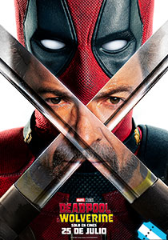

Tráilers que debes ver



House Of The Dragón
La Casa del Dragón se centra en la casa Targaryen, sólo que 200 años antes que los hechos narrados en la ficción original. La familia Targaryen escapó de la destrucción de Valyria para asentarse en Rocadragón, desde donde Aegon I conquistó Poniente.
His Dark Materials
Lyra, una huérfana en un universo donde convergen ciencia, teología y magia, busca a un amigo secuestrado. Su aventura revela un complot sobre niños robados y la busca de entender el enigmático Dust.
Vikings: Valhalla
En esta secuela de Vikingos, 100 años después, una nueva generación de héroes legendarios surge para forjar su destino y cambiar la historia.
Fallout
La serie ocurre 200 años después del apocalipsis, donde los habitantes de los refugios nucleares de lujo deberán salir nuevamente a la superficie y se encontrarán un universo complejo, alegremente raro y, sobre todo, extremadamente violento, el cual probará las habilidades de supervivencia de cada uno.
The Acolyte
Cien años antes del alzamiento del Imperio, la Orden Jedi y la República Galáctica gozan de prosperidad tras siglos sin guerras. Pero ahora la investigación de una oleada de estremecedores crímenes enfrentará a un maestro jedi con una peligrosa guerrera de su pasado.
The Withcer
Los peores monstruos son los que nosotros mismos creamos Geralt, un brujo que se dedica a cazar monstruos genéticamente modificados, busca su lugar en un mundo donde a menudo los humanos demuestran ser peores que las bestias.
ET el Extraterrestre
Un pequeño extraterrestre de otro planeta queda abandonado en la Tierra cuando su nave se olvida de él. Está completamente solo y asustado hasta que Elliott, un niño de nueve años, lo encuentra y decide esconderlo en su casa para protegerlo. El chico y sus hermanos intentarán encontrar la forma de devolver al extraterrestre a su planeta antes de que lo encuentren los científicos y la policía.
Titanic
Jack es un joven artista que gana un pasaje para viajar a América en el Titanic, el transatlántico más grande y seguro jamás construido. A bordo del buque conoce a Rose, una chica de clase alta que viaja con su madre y su prometido Cal, un millonario engreído a quien solo interesa el prestigio de la familia de su prometida. Jack y Rose se enamoran a pesar de las trabas que ponen la madre de ella y Cal en su relación. Mientras, el lujoso transatlántico se acerca a un inmenso iceberg.
Misión Imposible
Ethan Hunt es un espía capaz de llevar a cabo las misiones más peligrosas con la máxima eficacia. Ahora debe participar en una dificilísima misión: evitar la venta de un disco robado que contiene información secreta de importancia vital.
Matrix
El programador informático Thomas Anderson, más conocido en el mundo de los "hacker" como Neo, está en el punto de mira del temible agente Smith. Otros dos piratas informáticos, Trinity y Morfeo, se ponen en contacto con Neo para ayudarlo a escapar. Matrix te posee. Sigue al conejo blanco.

La Mascara
Un aburrido empleado de banca encuentra una máscara que representa a Loki, un dios de la malicia y la travesura, la cual le transformará por completo.
Solo en Casa 2
En plenas navidades, Kevin y su familia están a punto de coger un avión para pasar unas pequeñas vacaciones. Sin embargo, Kevin se equivoca y embarca en un avión a Nueva York. Cuando llega a la gran ciudad, lejos de sentirse solo y desprotegido, Kevin reserva una habitación en un lujoso hotel con la tarjeta de crédito de su padre y se hace amigo de un sin techo.
Godzilla
Las pruebas nucleares realizadas por los franceses en el Pacífico provocan la aparición en el océano de un gigantesco reptil mutante, que ha sido localizado tras atacar un barco de pesca japonés; ahora saldrá del océano para dirigirse a Nueva York.
La Momia
Rick O'Connell y un compañero descubren las ruinas de Hamunaptra. Después vuelven al mismo lugar con una egiptóloga y su hermano. Allí coinciden con un grupo de americanos que provocan la resurrección de la momia de un diabólico sacerdote egipcio.
Volver al Futuro
El adolescente Marty McFly es amigo de Doc, un científico que ha construido una máquina del tiempo. Cuando los dos prueban el artefacto, un error fortuito hace que Marty llegue a 1955, año en el que sus padres iban al instituto y todavía no se habían conocido. Después de impedir su primer encuentro, Marty deberá conseguir que se conozcan y se enamoren, de lo contrario su existencia no sería posible.
Star Wars: Una nueva Esperanza
La nave en la que viaja la princesa Leia es capturada por las tropas imperiales al mando del temible Darth Vader. Antes de ser atrapada, Leia consigue introducir un mensaje en su robot R2-D2, quien acompañado de su inseparable C-3PO logran escapar. Tras aterrizar en el planeta Tattooine son capturados y vendidos al joven Luke Skywalker, quien descubrirá el mensaje oculto que va destinado a Obi Wan Kenobi, maestro Jedi a quien Luke debe encontrar para salvar a la princesa.